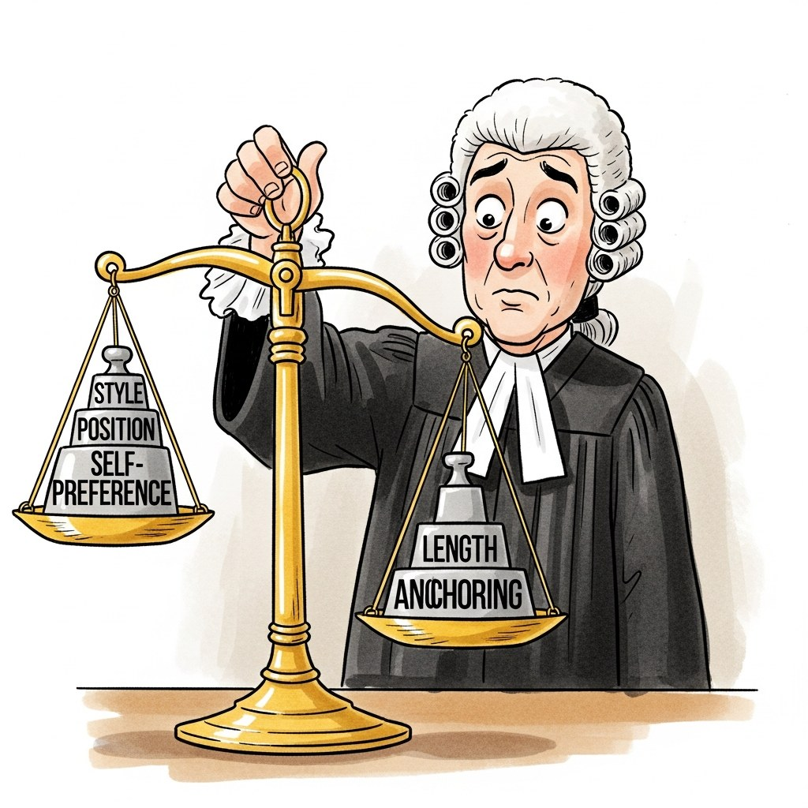
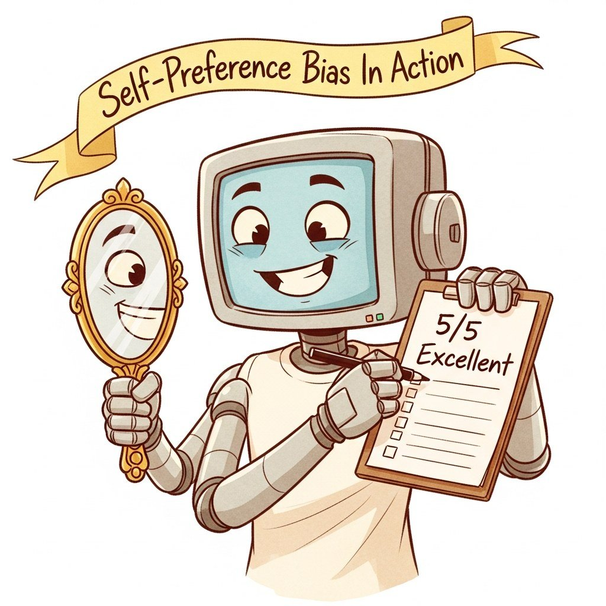

"They put me on the bench, handed me a gavel, and forgot to mention I prefer responses that go first, run long, and sound like me. Calibration paperwork is on the desk."
Eval, Robed and Biased Judge AI Agent
46.1.1 Judge Bias Taxonomy


Human evaluation is the gold standard for assessing generative model quality, but it is slow (minutes per example), expensive (\$0.50-\$5 per judgment at platforms like Scale AI or Toloka), and impossible to run on every commit in a CI pipeline. LLM-as-Judge replaces the human rater with a frontier model (GPT-4, Claude, Gemini) acting as an evaluator, dropping per-judgment cost by roughly two orders of magnitude (to fractions of a cent) and latency from minutes to seconds. This enables continuous evaluation: every model checkpoint, every prompt change, every retrieval index update can be scored end-to-end on thousands of held-out examples within minutes. The cost, however, is bias. Three canonical biases dominate practice: position bias (in pairwise comparison the order of candidates flips the verdict), length bias (longer responses win even when no more informative), and self-preference bias (a judge model rates its own outputs higher than blinded baselines predict). The rest of this chapter is the toolkit for getting useful signal out of LLM judges despite these biases: detection, debiasing, judge-model training, and ensembles.
Prerequisites
This section assumes familiarity with LLM evaluation foundations from Section 42.1 and with experimental design from Section 42.2. Familiarity with prompt engineering from Section 12.1 helps when designing judge prompts.
What it is: Use an LLM as judge for routine eval (cheap, scalable). Maintain a small (200-500 examples) human-judged calibration set. Periodically (weekly) run the LLM judge against the calibration set; report agreement rate (Cohen's kappa). When agreement drops below a threshold (e.g., kappa < 0.6), pause LLM-judged decisions until the judge model or prompt is recalibrated.
When not to use it: Domains where ground-truth is genuinely unavailable (creative writing, novel research). Without a calibration anchor, LLM judges drift unmonitored.
Before deploying any LLM-as-Judge system, you must understand its failure modes. Research has identified several systematic biases that affect judge reliability. These biases are not random noise; they are directional, meaning they consistently inflate or deflate scores for outputs with particular characteristics. A judge system that ignores these biases will produce rankings that reflect the biases of the judge rather than the true quality of the evaluated outputs.
Five biases every LLM judge exhibits. (1) Position bias: in pairwise comparison, judges prefer whichever response appears first (or last, depending on the model). Swapping the order of responses can flip the verdict. (2) Verbosity/length bias: judges systematically prefer longer, more detailed responses even when the additional length adds no informational value. (3) Self-preference bias: a model used as a judge tends to rate its own outputs higher than outputs from other models. (4) Anchoring bias: when a reference answer or rubric example is provided, judges anchor to surface features of the reference rather than evaluating semantic correctness. (5) Style bias: judges reward responses that use confident, authoritative language, bullet points, and structured formatting, regardless of factual accuracy.
Position bias is the most extensively studied and the easiest to mitigate. The standard solution is to evaluate each pair twice with swapped order and check for consistency. Code Fragment 46.1.2 demonstrates how to detect and quantify position bias in a pairwise judge.
# Detecting and quantifying position bias in an LLM judge
from openai import OpenAI
import json
client = OpenAI()
JUDGE_MODEL = "gpt-4o"
def pairwise_judge(
question: str,
response_a: str,
response_b: str,
judge_model: str = JUDGE_MODEL,
) -> str:
"""Ask the judge to select the better response. Returns 'A' or 'B'."""
prompt = f"""You are an impartial judge. Given a question and two responses,
select which response is better. Output only 'A' or 'B'.
Question: {question}
Response A: {response_a}
Response B: {response_b}
Better response:"""
result = client.chat.completions.create(
model=judge_model,
messages=[{"role": "user", "content": prompt}],
max_tokens=1,
temperature=0.0,
)
return result.choices[0].message.content.strip()
def detect_position_bias(
question: str,
response_1: str,
response_2: str,
) -> dict:
"""Run pairwise comparison in both orders to detect position bias."""
# Order 1: response_1 as A, response_2 as B
verdict_1 = pairwise_judge(question, response_1, response_2)
# Order 2: response_2 as A, response_1 as B
verdict_2 = pairwise_judge(question, response_2, response_1)
# Check consistency: if the judge is unbiased, the verdicts should
# point to the same underlying response regardless of position
consistent = (
(verdict_1 == "A" and verdict_2 == "B") # Both prefer response_1
or (verdict_1 == "B" and verdict_2 == "A") # Both prefer response_2
)
return {
"order_1_verdict": verdict_1,
"order_2_verdict": verdict_2,
"consistent": consistent,
"position_bias_detected": not consistent,
}
# Run on a batch and compute position bias rate
bias_results = []
for sample in eval_samples:
result = detect_position_bias(sample["q"], sample["r1"], sample["r2"])
bias_results.append(result)
bias_rate = sum(1 for r in bias_results if r["position_bias_detected"]) / len(bias_results)
print(f"Position bias rate: {bias_rate:.1%}")
# Typical range for GPT-4: 10-25% of pairwise comparisons are inconsistentThe same result in 5 lines with DeepEval:
from deepeval.metrics import BiasMetric
from deepeval.test_case import LLMTestCase
test_case = LLMTestCase(input=question, actual_output=response_a)
metric = BiasMetric(threshold=0.5)
metric.measure(test_case)
print(f"Bias score: {metric.score}, Reason: {metric.reason}")In a well-known experiment, GPT-4 acting as a judge rated GPT-4's own outputs as the best response 67% of the time, compared to 50% when judging between two other models of equal quality. This "narcissism bias" is the AI equivalent of a professor grading their own textbook as the best one on the syllabus.
Section 41.3 covers complementary bias-mitigation techniques for conversational-AI evaluation tools (rubric scaffolding, response normalization, judge-side prompt engineering). The biases catalogued here (position, length, verbosity, self-preference, anchoring, style) appear in any LLM-mediated evaluation; the mitigations are largely transferable. Read the two sections together when designing an end-to-end eval harness: this chapter focuses on the judge component, Section 41.3 covers the rubric-and-task layer that sits above the judge.
The "just upgrade to GPT-4" reflex assumes capability fixes calibration; it does not. A stronger judge often has stronger biases (deeper self-preference, more confident verbosity bias, harder-to-detect anchoring) because the same training signal that made it capable also locked in its preferences. Position-swap, length-controlled, and blind-cohort harnesses are required regardless of judge size; the only thing changing the judge model does is shift the bias direction, not remove the need to measure it. Treat judge bias as a measurement-design problem, not a model-choice problem.
It is tempting to ensemble two LLM judges and trust the consensus. But if both judges share training data (e.g., both trained on web-scraped GPT-4 outputs), they will share the same systematic biases and "agree" because they are wrong in the same direction, not because they are right. Independence is what makes ensembles work, and you only get that by varying training corpora, base architectures, or by including a human anchor on a calibration subset. A 0.9 kappa between two GPT-family judges tells you almost nothing about ground truth.
LMSYS Chatbot Arena and most other public LLM leaderboards rank models using the Bradley-Terry model from psychometrics. Each model $i$ is assigned a latent skill rating $r_i$, and the probability that model $i$ beats model $j$ in a pairwise comparison is $$P(i \succ j) = \sigma(r_i - r_j) = \frac{1}{1 + e^{-(r_i - r_j)}}.$$ Given a pile of pairwise comparisons (one judge picking the winner of each pair), the leaderboard fits the $r_i$ by maximum likelihood, then converts to Elo-style integer ratings. The same model underlies chess Elo, RLHF reward modeling, and AlpacaEval LC: any time you see an LLM benchmark reported as a pairwise leaderboard, Bradley-Terry is the engine.
Knowing that LLM judges are useful is only the start; the next step is to measure how reliable they actually are and which biases to compensate for. Continue to Section 46.2: Judge Reliability and Common Biases.